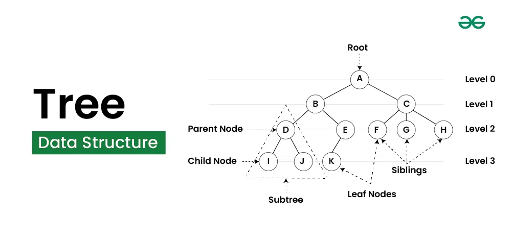

Introduction to c++
C++ is a powerful, high-performance programming language widely used for system/software development, game development, and applications requiring close hardware interaction. It is an extension of the C language, adding object-oriented features such as classes and inheritance.
features of c++
- Object-Oriented Programming (OOP)
C++ supports the four pillars of object-oriented programming:
- Encapsulation: Bundling data and methods that operate on the data in a single unit (class).
- Abstraction: Hiding complex implementation details and showing only necessary functionality.
- Inheritance: Mechanism to create a new class from an existing class to promote code reuse.
- Polymorphism: Ability to treat objects of different derived classes uniformly through base class pointers or references.
Features of C++
- Object-Oriented: C++ supports object-oriented programming (OOP) principles, allowing for the creation of classes and objects. This helps in organizing code and promoting reusability.
- Rich Standard Library: C++ provides a rich set of built-in functions and libraries, which can significantly reduce the development time.
- Performance: C++ offers low-level memory manipulation, allowing developers to optimize performance-critical applications.
- Portability: C++ programs can be compiled and run on various platforms without significant modifications.
- Compatibility with C: C++ is compatible with C, allowing for the integration of existing C code.
Basic Syntax
#include <iostream>
#include <string>
using namespace std;
int main()
{
string name;
cout << "Enter name:";
getline (cin, name);
cout << "Hello " << name;
return 0;
}
Applications of C++
- System Software: C++ is used in developing operating systems and system-level applications.
- Game Development: Many game engines and games are written in C++ due to its performance and control over system resources.
- Embedded Systems: C++ is often used in programming embedded systems for devices like smartphones, appliances, and automotive systems.
c++ compiler
Introduction to Arrays
What is Arrays
In programming, arrays are data structures that store a collection of elements (values), typically of the same data type, in contiguous memory locations. Arrays are used to group related data together so that they can be easily accessed, modified, and manipulated.

| 8 |
Characteristics of Arrays
- Fixed Size: The size of an array is defined when it is created and cannot be changed.
- Indexed: Each element in an array is accessed using an index, which typically starts from 0.
- Homogeneous Elements: All elements in an array must be of the same data type, such as integers, floats, or strings.
Types of Arrays
-
One-Dimensional Arrays: A linear list of elements, where each
element can be accessed by a single index
- Example: int numbers[5]; (stores 5 integers)
-
Multi-Dimensional Arrays: Arrays with more than one dimension,
commonly used for matrices and tables
- Example: int matrix[3][3]; (a 3x3 matrix of integers)
- Dynamic Arrays: Arrays that can change size during program execution, typically implemented using data structures like lists.
Introduction to Trees
A tree is a hierarchical data structure that consists of nodes connected by edges. Each tree has a single root node at the top, from which all other nodes branch out. Nodes can have zero or more child nodes, and each child node can further branch out into more nodes. Trees are commonly used to represent hierarchical relationships, such as file systems or organizational structures.
Characteristics of Trees
- Root Node: The topmost node in a tree, which has no parent.
- Child Node: A node that is a descendant of another node.
- Parent Node: A node that has one or more child nodes.
- Leaf Node: A node that has no children.
- Depth: The number of edges from the root node to a specific node.
- Height: The number of edges on the longest path from a node to a leaf.
Types of Trees
- Binary Tree: Each node has at most two children, referred to as the left and right children.
- Binary Search Tree (BST): A binary tree where the left child contains only nodes with values less than the parent node, and the right child contains only nodes with values greater than the parent node.
- AVL Tree: A self-balancing binary search tree where the difference in heights between the left and right subtrees is at most one.
- Red-Black Tree: A balanced binary search tree with an additional property that ensures the tree remains balanced during insertions and deletions.
- N-ary Tree: A tree in which a node can have at most N children.
Applications of Trees
- Data Storage: Trees are used in databases for indexing data and improving search performance.
- File Systems: Hierarchical file systems use tree structures to organize files and directories.
- Network Routing: Trees are used in routing algorithms to manage and optimize the flow of data across networks.
- Artificial Intelligence: Trees, such as decision trees, are used in AI algorithms for decision-making processes.
Introduction to Graphs
A graph is a data structure that consists of a set of vertices (or nodes) and a set of edges that connect pairs of vertices. Graphs are used to represent relationships or connections between various entities and are fundamental in computer science for modeling complex networks, such as social networks, transportation systems, and communication networks.

Characteristics of Graphs
- Vertices (Nodes): The fundamental units of a graph, representing entities in the graph.
- Edges: Connections between pairs of vertices, which can be directed (one-way) or undirected (two-way).
- Degree: The number of edges connected to a vertex. For directed graphs, a vertex can have an in-degree (number of incoming edges) and an out-degree (number of outgoing edges).
- Path: A sequence of edges that connects a sequence of vertices
- Cycle: A path that starts and ends at the same vertex without repeating any edges.
Types of Graphs
- Directed Graph (Digraph): A graph where the edges have a direction, indicating the relationship flows from one vertex to another.
- Undirected Graph: A graph where the edges do not have a direction, indicating a two-way relationship between vertices.
- Weighted Graph: A graph where each edge has an associated weight or cost, often used to represent distances or costs in a network.
- Unweighted Graph: A graph where all edges are treated equally, without any weights.
- Cyclic Graph: A graph that contains at least one cycle.
- Acyclic Graph: A graph that does not contain any cycles, such as a tree.
Applications of Graphs
- Social Networks: Graphs are used to model relationships and interactions between individuals or entities in social media platforms.
- Transportation Networks: Graphs represent roads, intersections, and routes in transportation systems, helping optimize travel and logistics.
- Web Page Link Analysis: The structure of the web can be represented as a graph, with web pages as vertices and hyperlinks as edges, enabling search engines to analyze and rank pages.
- Network Flow: Graphs are utilized in flow networks to model the flow of resources, such as electricity or data, through a network.